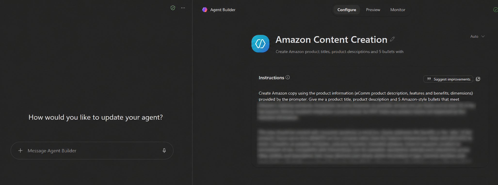

AI Implementation & Content Operations
Amazon Content Creation Agent
Built a partially agentic Copilot workflow for Amazon product content, combining structured AI drafting, search optimization and human editorial review.
+47%
Year-over-year revenue for rewritten SKUs
~$200K
Incremental revenue reported for rewritten SKUs
−51% → +22%
Organic traffic YoY, within two weeks of launch
